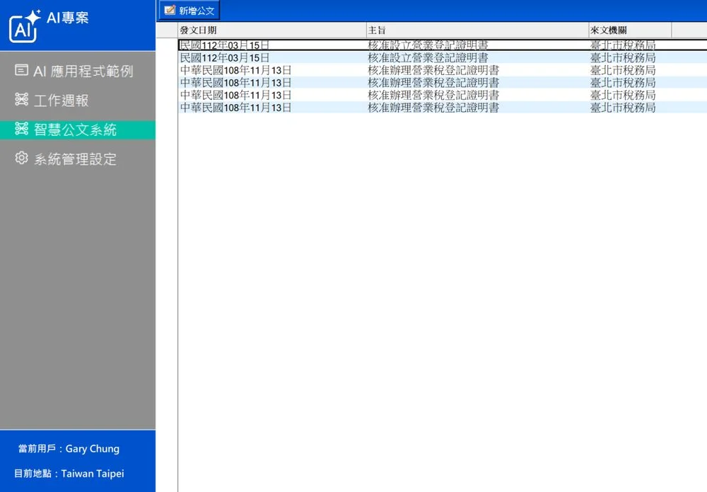

OCR 智慧文件辨識 — 地端整合服務
讓紙本資料自己變成資料。地端部署、資料不出門，也能享受 AI 自動化的效率。
每天被紙本耗掉的時間
很多單位都還在用「人眼讀、人手 key」的方式處理大量單據——既慢、又貴、又容易錯，員工的時間被耗在重複勞動上。
來文格式不一
主管機關來文多為紙本或 PDF，沒有 Word 原始檔，無法直接複製，全靠人工逐字打字。
建檔曠日費時
銀行、保險、政府機關每天都有大量紙本公文與單據需要建檔，人力成本驚人。
雲端 OCR 顧慮多
客戶資料、機敏文件、個資內容，許多企業擔心送上雲端，導致 AI 化遲遲沒法落地。
含浮水印 PDF 辨識率
資料不離開機房
直接寫入既有系統
地端 AI，也能打雲端
我們實測過多套地端 OCR 與多模態模型——在自有 GPU 環境下，辨識率與雲端 API 的差距已大幅縮小，對資料敏感的產業，完全不用妥協。
OCR 核心整合能力
description多格式文件辨識
支援 PDF、掃描件、手寫單據、含浮水印文件、表格、證件等多種來源，繁體中文也能精準處理。
dns地端部署，資料不出門
整套服務可佈署在您的機房或私有雲，敏感資料完全不離開內網，符合金融、政府、醫療的資安規範。
integration_instructions與既有系統整合
辨識完成後自動寫入公文系統、外稽系統、ERP 或 Domino 應用，省下二次匯入的時間。
fact_check進度可視化 × 人工複核
批次處理時清楚顯示進度條，特殊欄位提供人工複核介面，AI 與人協作，準確度與效率兼顧。
智慧公文辨識流程
先宏的 OCR 方案不只是文字辨識，而是從「紙本掃描 → AI 智慧分文 → 自動欄位擷取 → 無縫寫入 Notes」的完整自動化流程。
紙本掃描
AI 智慧分文
自動欄位擷取
無縫寫入 Notes

智慧公文系統實際畫面：紙本 OCR → AI 分類 → 欄位擷取 → Notes 無縫整合。
應用場景
銀行 · 公文管理
來文紙本 PDF 自動辨識主旨、說明、發文字號，無痛建檔進公文系統。
外稽 · 查核報告
機關來文 OCR 後直接產出文字檔附入查核文件，作業時間大幅縮短。
產險 · 自動理賠
保單、發票、估價單一次辨識，欄位自動擷取，理賠流程加速。
企業 · 報支明細
差旅費、發票、收據自動辨識金額與項目，直接帶入請款流程。
KYC · 證件辨識
身分證、駕照、護照等證件影像辨識，欄位自動帶入客戶系統。
醫療 · 表單數位化
病歷表、申請書、住院單據自動擷取結構化欄位。
為什麼強調地端整合
企業 AI 化最大的卡點，往往不是「能不能做」，而是「資料能不能出去」。我們把整套 OCR 與多模態 AI 工作流程都部署在您的環境內，全程不依賴雲端 API。
資料不離開機房，符合金管會、個資法等規範。
不需擔心雲端服務漲價、變更條款或下架。
可與企業內部既有 LDAP、AD、ERP、公文系統整合。
支援自有 GPU 或 CPU 環境，依預算彈性配置。